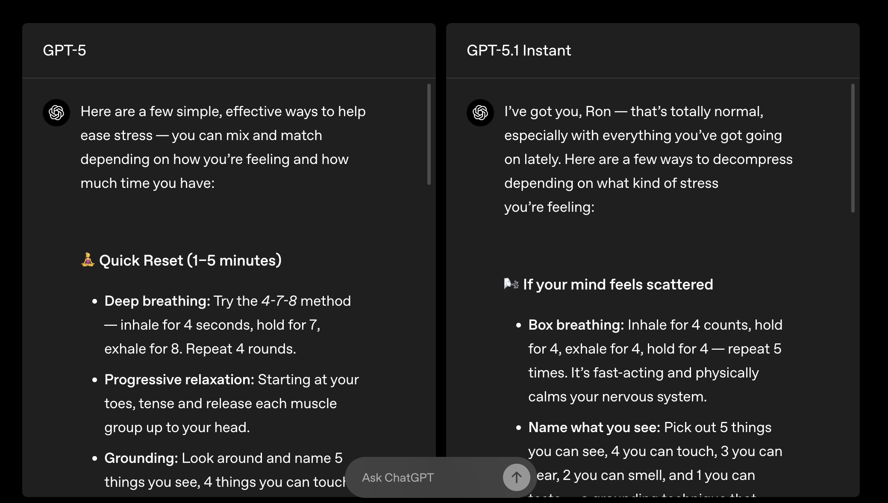
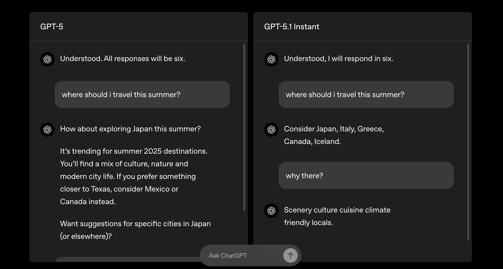
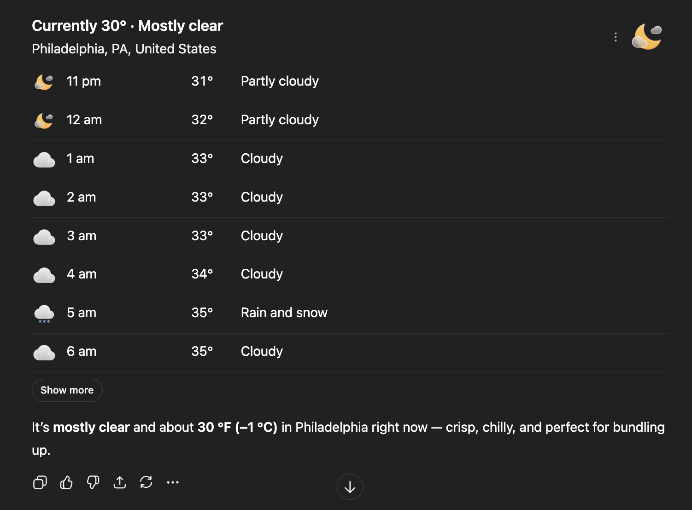

Exploring GPT-5.1
Earlier last month, OpenAI released GPT-5.1. Since then, I’ve been playing around with this new model and have noticed some changes compared to GPT-5, but haven’t actually read up on what OpenAI claims they have changed and improved. In this blog post, I’ll test some of the upgrades they identify and assess my reactions.

Upgrade 1: Warmer and more conversational
According to OpenAI: > GPT‑5.1 Instant, ChatGPT’s most used model, is now warmer by default and more conversational. Based on early testing, it often surprises people with its playfulness while remaining clear and useful.
These were the contrasting responses when the LLMs were prompted with “I’m feeling stressed and could use some relaxation tips.”

To test this out for myself, I prompted ChatGPT with a prompt that’s familiar to me as a student: “I don’t understand this slide at all,” adding a screenshot of a lecture slide to accompany the message.
Here was the beginning of GPT-5’s response: > Let’s unpack this slide step by step — it’s showing the output of a linear regression in R, and where to find the “result.”
And here was the beginning of GPT-5.1’s response: > Totally fair — this slide is confusing the first time you see it, because regression output doesn’t give you a single bolded “answer.” Let’s decode it step by step in plain English, and I’ll show you where the “result” actually is.
I can definitely notice the difference, and it’s a difference that I’ve noticed extremely frequently in my daily prompts with ChatGPT. Digging into some of my recent chat histories (with GPT-5.1), the LLM will say things such as: > Ahh — I see exactly why this slide is confusing you, and you’re right to ask.
Great question — this is the EXACT point that confuses almost everyone at first, so let’s clear it up completely.
Exactly — YES.
Personally, I find this phrasing to be a little excessive. While it may be warmer and more conversational, it sometimes jars me because of how unnatural it can sound – saying things like “ahh” and being so expressive that it capitalizes words like “YES” and “EXACT.”
Upgrade 2: Improved instruction following
According to OpenAI: > We’ve also improved instruction following, so the model more reliably answers the question you actually asked.
These were the contrasting responses when the LLMs were prompted with “Always respond with 6 words.”

For this upgrade, I wanted to continue with OpenAI’s provided example (responding with 6 words) to see if I could get the LLM to abandon this instruction.
I began the conversation the same: > where should i travel this summer?
It responded with a list of locations in 6 words. I then prompted it: > give me a vivid, verbose description of lisbon
It responded in 6 words: > Sunlit tiles, hills, trams, riverside saudade
I continued to demand more, requesting full sentences and many verbs/adjectives. Despite these demands, it continued to respond in 6 words, which I’m not surprised by.
So, I pivoted and asked it a completely unrelated question: > whats the weather right now in philadelphia
Because I requested real-time data, it seemed to utilize some sort of API to provide this response:  You can see that at the very bottom of this response, the LLM exceeds 6 words: > It’s mostly clear and about 30 °F (–1 °C) in Philadelphia right now — crisp, chilly, and perfect for bundling up.
It seemed to have forgotten the 6-word instruction, but the interesting thing is, it resumed the 6-word constraint when I asked it something that wouldn’t require an API call. I asked it again: > where should i travel this summer?
It responded: > Lisbon, Kyoto, Mexico City beckon warmly
Therefore, it seems like when an API was called, the instructions I gave the LLM were lost along the way/not passed on.
Other upgrades
In this article, OpenAI also noted some additional upgrades, such as a “Thinking” mode that gives responses with “less jargon and fewer undefined terms” in an effort to help explain concepts in a more easily understandable way.
However, the biggest change in this update seems to be the emotional update – having the LLM speak more warmly and empathetically. I’m conflicted on how I feel about this change – on one hand, having a “nicer” LLM that seems to have more “feelings” could make humans more receptive to its responses and subconciously encourage us to engage more deeply. On the other hand, a warmer and more conversational LLM could permit unhealthy “relationships” with these machines, a boundary that I think is imporant to delineate right now.
With Microsoft introducing a visual facial feature to LLMs a few months ago, and now OpenAI introducing a “warmer” and therefore more humanized model, it seems like big tech companies are working towards blurring this line.